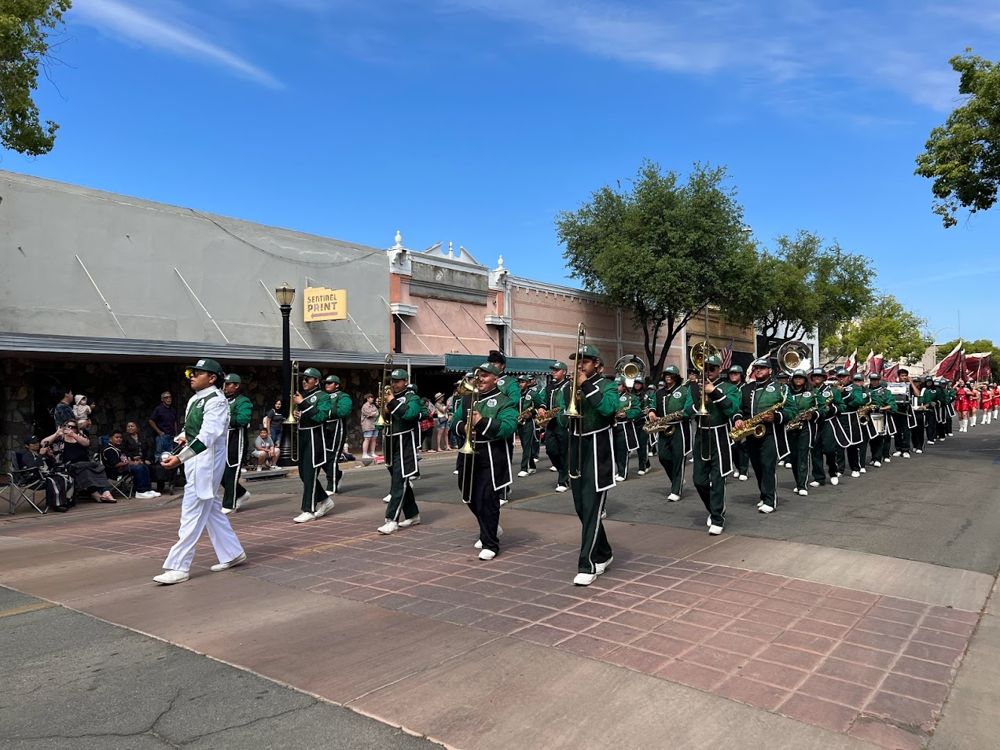
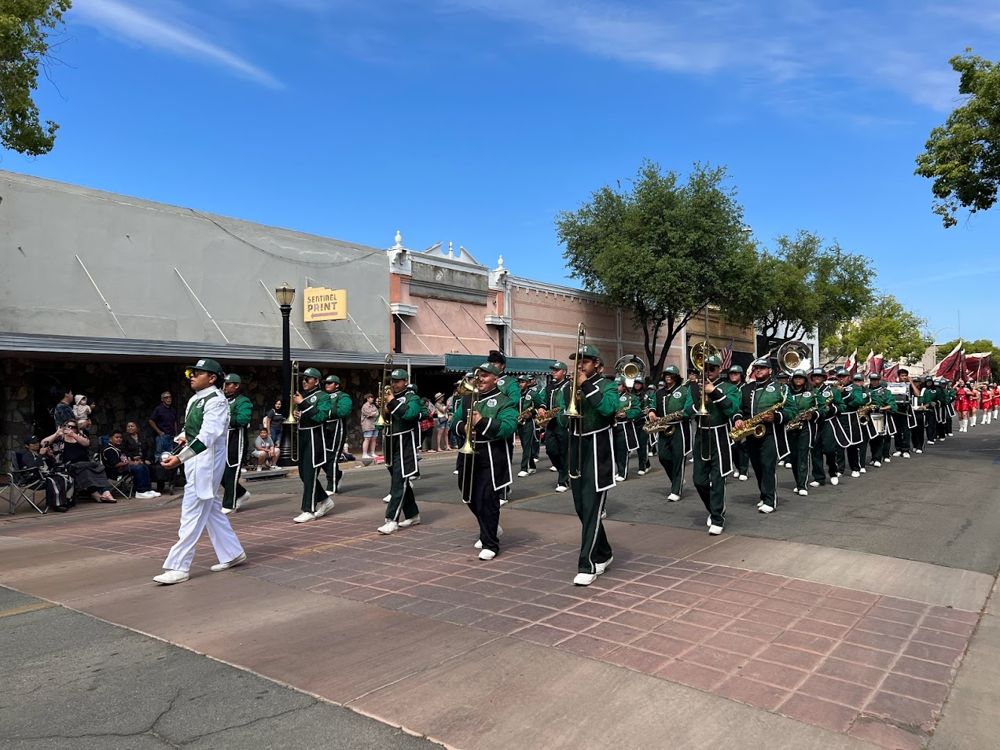
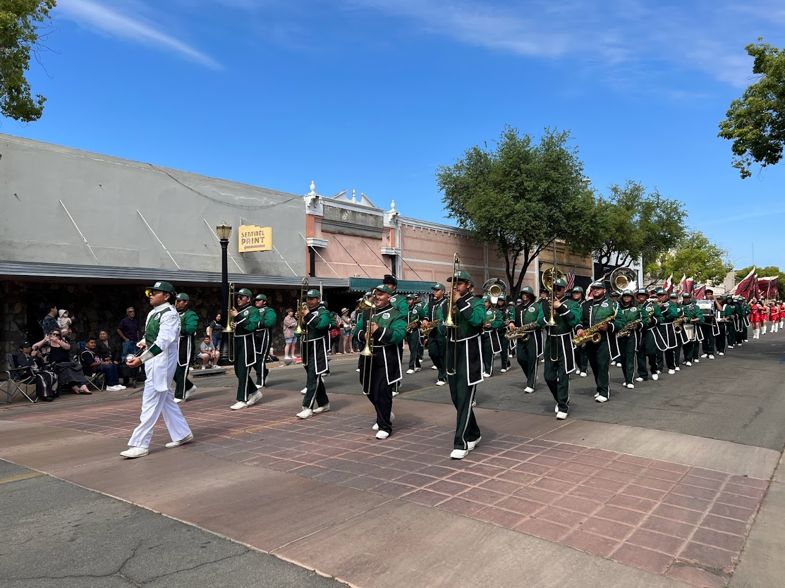

Take a Look at Our Past Events!
 

The Fall Festival began in the early 1920s as a small community fair in the heart of Central Valley, California. Initially, it was a modest harvest festival organized by local farmers to celebrate the end of the agricultural season. The event featured homemade food stands, local crafts, and live music, providing a space for the community to come together and share the fruits of their labor.
The Fall Festival has gained immense popularity since its establishment. Post-World War II, the festival expanded to include a wider range of activities. The introduction of carnival rides in the late 1940s was a significant milestone, transforming it from a local fair into a more prominent event. The 1950s and 1960s saw the addition of parades, beauty pageants, and larger musical acts, drawing visitors from neighboring towns and cities.
Entering the 21st century, the Fall Festival has evolved into a major event, attracting thousands of visitors annually. Technology advancements have brought about more thrilling rides, state-of-the-art stage setups for concerts, and a significant online presence. Environmental consciousness has also become a focus, with efforts to make the carnival more sustainable by offering a festival recycling program
Today, the Fall Festival is not just a celebration of the harvest but a symbol of community resilience, cultural diversity, and shared joy. It stands as a testament to the enduring spirit of Central Valley, California, bringing together generations of families and friends in a festive atmosphere that has spanned over a century.
